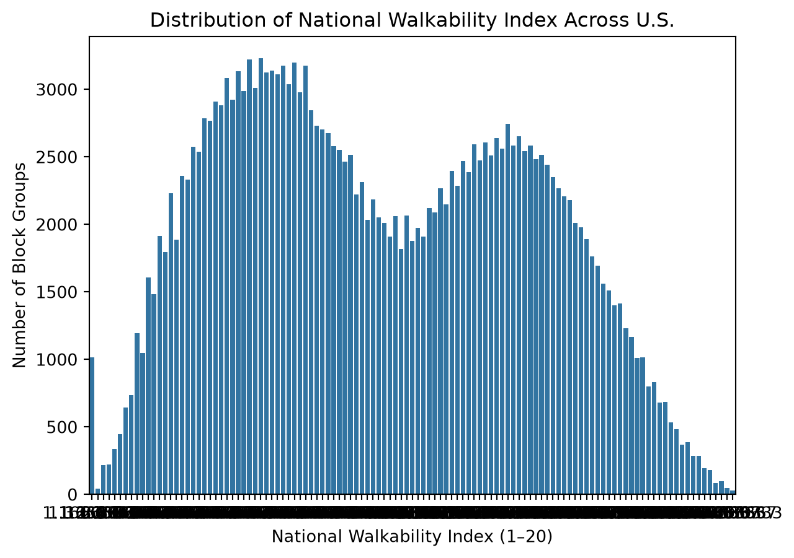

#what this cell does is find the root of the project that we have at hand, so that every future rendition of this can be executed the same way, so that we can hopefully avoid porting errors. The hope is that if we were to export this project and it’s accompanying folder structure (including the data), and ensure that all calls inside the program are relative, then we wouldnt have to worry about referencing anything outside the folder structure and schema itself, mollifying the project against errors that would arise from calling something outside of it’s purview
import osfrom pathlib import Path_project_root = Path.cwd()whilenot (_project_root /".git").exists():if _project_root == _project_root.parent:raiseRuntimeError(".git not found — are you inside the repo?") _project_root = _project_root.parentos.chdir(_project_root)print("Project root:", os.getcwd())
#getting the dataset to memory using pandas and also with duckdb - using a relative path to aid in the portability of tihs program - I ran into the issue of having copied or called the massive csv too many times
import duckdbfrom pathlib import Pathimport pandas as pdcsv ="Data/raw/EPA_SmartLocationDatabase_V3_Jan_2021_Final.csv"#making a parquetparquet ="Data/raw/walkability.parquet"#i ran into a bunch of problems sequentially loading in the csv, so Ill try to only do it once!data = pd.read_csv(csv)print(data.head())#connectingcon = duckdb.connect() #if the path to the parquet does not exist, we have to read it in from the relative path ifnot Path(parquet).exists(): con.execute(f""" COPY (SELECT * FROM read_csv_auto('{csv}')) TO '{parquet}' (FORMAT PARQUET) """)print("Wrote", parquet)#it existselse:print("Parquet exists — skipping ingest")#getting the row count of the parquetcon.execute(f""" CREATE OR REPLACE VIEW walkability AS SELECT * FROM read_parquet('{parquet}')""")print(con.execute("SELECT COUNT(*) AS n_blockgroups FROM walkability").df())
print(con.execute('SHOW ALL TABLES').df())print(con.execute("DESCRIBE walkability").df())#making a new view called cleaned, that tries to add the leading zeroes onto the county and state codes to retain the data integrity - bigint is a large integer, and the varchar inclusion ensures that we are casting the data to a string, for better manipulation. #geoid, the first row, pads the left side of the code with 0's to comply with the united states 12 digit code schema#then we substring the first five, as is the united states way of devising the border#then the last one gets the first two digits, to get hte state ids. #finally, it outputs the first five rows of geoid20_str, county_fips, and state_fipscon.execute(""" CREATE OR REPLACE VIEW cleaned AS SELECT *, LPAD(CAST(GEOID20 AS BIGINT)::VARCHAR, 12, '0') AS geoid20_str, SUBSTR(LPAD(CAST(GEOID20 AS BIGINT)::VARCHAR, 12, '0'),1,5) AS county_fips, LPAD(CAST(STATEFP AS BIGINT)::VARCHAR, 2, '0') AS state_fips, NULLIF(D4A, -99999) AS D4A_clean FROM walkability""")con.execute("SELECT geoid20_str, county_fips, state_fips FROM cleaned LIMIT 5").df()
#cell to check the numbers of all the variables to see if they are alright. we select all rows *, then the number of distinct state fips and county fips, as total rows and n states, then sum the number of times that the str isn't length 12 (meaning it would be null) and summing that. we are looking for zero checks = con.execute(""" SELECT COUNT(*) AS total_rows, COUNT(DISTINCT state_fips) AS n_states, COUNT(DISTINCT county_fips) AS n_counties, SUM((LENGTH(geoid20_str) <> 12)::INT) AS bad_geoid_len, SUM((NatWalkInd IS NULL)::INT) AS null_walk FROM cleaned""").df()print(checks.T)
#choosing the data/processed folder as the depository for the tables. os.makedirs("Data/processed", exist_ok=True)#copying three seperate tables, each with differing information to a parquet format, to be saved for a different reason/exploration, for example geography, walkindex, and CSAcon.execute("""COPY ( SELECT county_fips, state_fips, geoid20_str, COUNTYFP FROM cleaned) TO 'Data/processed/geography.parquet' (FORMAT PARQUET)""")con.execute("""COPY ( SELECT county_fips, geoid20_str, NatWalkInd, PCT_AO0, PCT_AO1, PCT_AO2P, D4A_clean FROM cleaned) TO 'Data/processed/walk_metrics.parquet' (FORMAT PARQUET)""")con.execute("""COPY ( SELECT TotPop, geoid20_str, CSA, CSA_Name, NatWalkInd FROM cleaned) TO 'Data/processed/metro.parquet' (FORMAT PARQUET)""")#then printing processed parquets - proving that it worked. print("Processed:", os.listdir("Data/processed"))
When it comes to performing routine cleaning tasks on both SQL and Pandas, I’ve found pandas much easier! While I must admit that sql is new to me, what took me wordy three lines of sql could be done in one command in pandas (the value_counts() of the NatWalkInd)
#getting the distributions of the NatWalkIndexNatWalkIndexDist = con.execute(""" SELECT NatWalkInd, COUNT (*) AS row_count FROM cleaned GROUP BY NatWalkInd ORDER BY NatWalkInd ASC """).df()print( NatWalkIndexDist)#now doing it with pandaswalkind = pd.read_parquet("Data/processed/walk_metrics.parquet")walkind = pd.DataFrame(walkind["NatWalkInd"])print(walkind["NatWalkInd"].value_counts())#another fix i am implementing is the changin of the -99999 sentinel value for the column D4A, which represents no transit within 3/4 of a mile, to null, so that the distributions dont get all wonly - my plan is to use a sql/pandas amalgamation frankenstein#getting table info from sql command#saving for later, as of right now#columns = []#all_col = con.execute("""# SELECT COUNT(*) FROM walkability for col WHERE col.fetchone()[0] = -99999# """)#print(D4A_clean)
#my idea of a workbench - I should only be using pandas as a workbench on columns or aggregate columns, not a whole dataframe - just a thoughtimport matplotlib.pyplot as pltimport seaborn as snssns.barplot(data=NatWalkIndexDist, x="NatWalkInd", y ="row_count")plt.title("Distribution of National Walkability Index Across U.S.")plt.xlabel("National Walkability Index (1–20)")plt.ylabel("Number of Block Groups")#the data seems to have teo peaked, with a skew to the left, evidenced by the right tail and the larger (more frequent) left peak, with a trough for middling walkability, and a less frequent, though still bery much peaky peak for the 13-16 walkability range.
Text(0, 0.5, 'Number of Block Groups')

Here, Im going to try reading and showing the shape/description of each of my parquets, to see if they went thorugh
From how I see it, SQL views are dynamic and transient, not cemented in memory and that function as the found goal of a certain query. They serve the purpose of quick fact finding that could be saved for later. However, Tables are a data structure that are saved in memory that should be used for sequential cleaning and updating to fit the narrative needed for the project. You would generally want a table, in my opinion, but tables fell short, in my project, when my original csv was too large, and it was dangerous to the kernel to continuously load in and copy it. However, views served the purpose of very quick data exploration to be used with pandas’ data manipulation tools
#parquet = "Data/raw/walkability.parquet"parquets_for_show = ["Data/processed/geography.parquet", "Data/processed/metro.parquet", "Data/processed/walk_metrics.parquet"]#should I agglomerate each parquet, for example df = pd.dataframe, then on the next line df.append(next parquet) for examplefor parquet in parquets_for_show: parquets = pd.read_parquet(parquet)print(parquets.shape)print(parquets.columns.tolist())print(parquet +"\n")